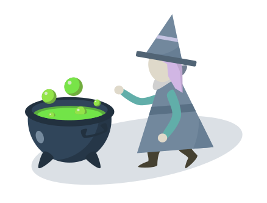

<!-- <div>
  <p-tabView [controlClose]="true" (onClose)="handleClose($event)">
    <p-tabPanel *ngFor="let tab of tabs ; let i = index" [header]="tab.savedNote.meta.title" [selected]="i == tabs.length-1" [closable]="true" [attr.data-uuid]="tab.savedNote.meta.uuid">
       {{ tab.savedNote.content }} {{ i }}
    </p-tabPanel>
  </p-tabView>
</div> -->
<div>
  <nz-tabset [(nzSelectedIndex)]="selectedIndex" (nzSelectChange)="tabChange($event)">
    <nz-tab *ngFor="let tab of tabs ; let i = index" [attr.data-uuid]="tab.noteUUID" [nzTitle]="titleTemplate">
      <ng-template #titleTemplate>
        <div>
          {{ tab.title }}
          <i nz-icon nzType="close" (click)="handleClose(tab)" class="ant-tabs-close-x"></i>
        </div>
      </ng-template>
      <app-note-editor [noteUUID]="tab.noteUUID" [storageMode]="tab.storageMode"></app-note-editor>
    </nz-tab>
  </nz-tabset>
  <div *ngIf="tabs.length==0" class="editorPlaceholder">
    <h2>À vous de jouer !</h2>
    <br>
    
    <p>
      Créez ou sélectionnez une note pour commencer à écrire
      <br><br>
      <button (click)="askCreateNote()" nz-button nzType="primary"><i nz-icon nzType="plus" nzTheme="outline"></i> Nouvelle note</button>&nbsp;
      <button (click)="askCreateFolder()" nz-button nzType="primary"><i nz-icon nzType="plus" nzTheme="outline"></i> Nouveau dossier</button>
    </p>
  </div>
</div>